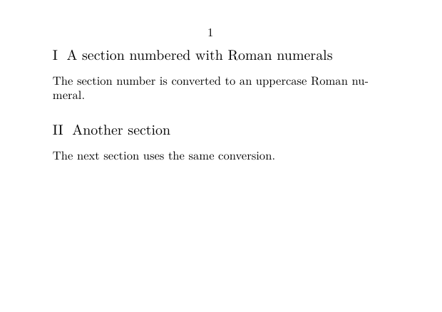
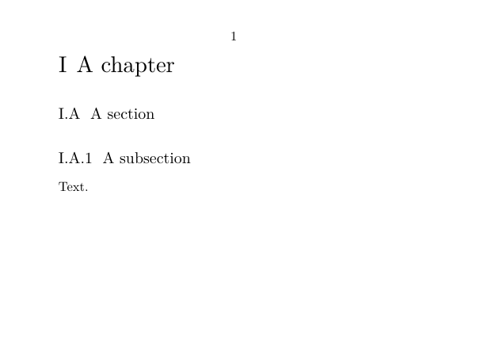
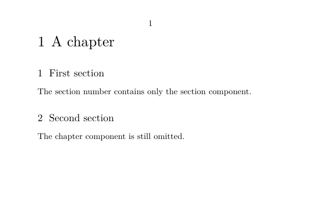
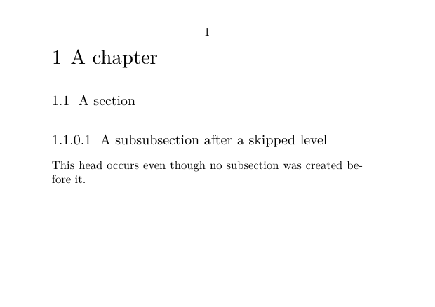
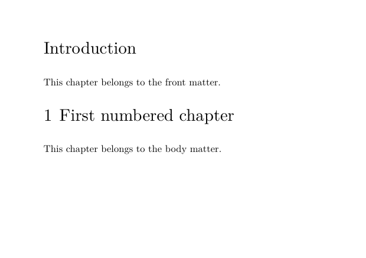
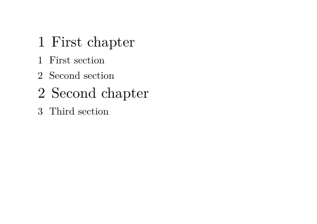

| TODO: This page is under construction as part of the renewal of the "Document structure and headlines" documentation area. Feel free to improve, correct, or extend it where useful. (See: To-Do List) |
HOW-TO GUIDE
This page shows how to customise the numbering of structural heads in current ConTeXt/LMTX.
If you are learning how to structure a document, start with Tutorials. For the appearance and placement of headlines, see Headlines formatting. For the conceptual distinction between structural levels, section blocks, numbering, lists, and references, see Understanding document structure and section heads.
NUMBERING IS NOT STRUCTURE
A chapter remains a chapter and a section remains a section when you change the way its number is printed.
STRUCTURAL LEVEL COUNTER VALUE PRINTED NUMBER
section ───► 2 ───► 1.2
│ │
│ ├── conversion
│ ├── segments
│ └── stopper
│
└── reset behaviour
These are different operations:
- a conversion changes how a number component is represented;
- segments determine which structural components are printed;
- a reset rule determines whether a counter starts again;
- a stopper adds punctuation after the printed number.
Contents
- 1 1. What this page does
- 2 2. Change the numbering conversion
- 3 3. Use different conversions at different levels
- 4 4. Control which structural levels appear in a number
- 5 5. Keep lower-level numbers consistent
- 6 6. Handle a skipped structural level
- 7 7. Understand numbering in front matter and body matter
- 8 8. Control when counters reset
- 9 9. Add punctuation after a section number
- 10 10. Advanced and historical material
- 11 11. Related pages
- 12 12. Attribution and revision history
1. What this page does
This page is a task-oriented guide to section numbering. It covers:
- changing number conversions;
- assigning different conversions to different structural levels;
- choosing which structural components appear in a number;
- keeping lower-level numbering consistent;
- dealing with skipped structural levels;
- understanding the effect of front matter and body matter;
- changing counter reset behaviour;
- adding punctuation after a section number.
Scope
This page is about the numbering of structural heads.
Page numbering and float-caption numbering are separate topics. Older material about those topics that used to appear on this page is discussed under Advanced and historical material.
2. Change the numbering conversion
A conversion changes the visible representation of a counter value without changing the counter itself.
For example, the values 1 and 2 can be printed as I and II.
-
\setuppapersize[A7,landscape] \setupbodyfont[8pt] \setupsection [section-3] [conversion=Romannumerals] \starttext \startsection [title={A section numbered with Roman numerals}] The section number is converted to an uppercase Roman numeral. \stopsection \startsection [title={Another section}] The next section uses the same conversion. \stopsection \stoptext
-

Here section-3 denotes the structural level used by section:
section-1 → part section-2 → chapter section-3 → section section-4 → subsection ...
Conversion does not change the counter
counter value 1 2 3
│ │ │
Romannumerals I II III
Character A B C
The structural items and their counter values remain the same; only their representation changes.
For available conversion mechanisms, see \convertnumber.
3. Use different conversions at different levels
Use \definestructureconversionset when several structural levels should use different conversions.
The following example prints chapters with uppercase Roman numerals, sections with uppercase letters, and subsections with Arabic numerals.
-
\setuppapersize[A7,landscape] \setupbodyfont[8pt] \definestructureconversionset [myset] [n,R,A,n] [n] \setuphead [chapter,section,subsection] [sectionconversionset=myset] \starttext \startchapter [title={A chapter}] \startsection [title={A section}] \startsubsection [title={A subsection}] Text. \stopsubsection \stopsection \stopchapter \stoptext
-

The result is structurally equivalent to:
chapter → I section → I.A subsection → I.A.1
Conversion sets follow structural levels
The positions in a structure conversion set are associated with the structural hierarchy, not merely with the heads named in the following \setuphead command.
position 1 → part position 2 → chapter position 3 → section position 4 → subsection ...
That is why the example begins with n: the first position belongs to part, even though no part is used in the document.
4. Control which structural levels appear in a number
A conversion changes the form of a component. The sectionsegments= setting does something different: it determines which components are printed.
By default, a section inside chapter 1 may be printed as 1.1, 1.2, and so on.
To print only the section component, use:
-
\setuppapersize[A7,landscape] \setupbodyfont[8pt] \setuphead [section] [sectionsegments=section] \starttext \startchapter [title={A chapter}] \startsection [title={First section}] The section number contains only the section component. \stopsection \startsection [title={Second section}] The chapter component is still omitted. \stopsection \stopchapter \stoptext
-

The structural data still contains the chapter component:
STRUCTURAL DATA PRINTED NUMBER
chapter 1
section 1.1 ───────────► 1
section 1.2 ───────────► 2
│
└── sectionsegments=section
Conversion and segments do different jobs
conversion= changes how a number component is represented.
sectionsegments= determines which structural components are included in the printed number.
5. Keep lower-level numbers consistent
Once you change the segments printed for one structural level, you will often want to define the segments of the lower levels explicitly as well.
For example, if sections are printed as 1, 2, ... rather than 1.1, 1.2, ..., subsections can be printed as 1.1, 1.2, 2.1, and so on.
Changing one level may require changing the levels below it
sectionsegments= is configured for each head. Removing the chapter component from a section number does not automatically decide how subsections or deeper levels should be printed.
The following tested example uses:
\setuppapersize[A7,landscape] \setupbodyfont[8pt] \setuphead [section] [sectionsegments=section] \setuphead [subsection] [sectionsegments=section:subsection] \starttext \startchapter [title={A chapter}] \startsection [title={First section}] \startsubsection [title={First subsection}] Text. \stopsubsection \startsubsection [title={Second subsection}] Text. \stopsubsection \stopsection \startsection [title={Second section}] \startsubsection [title={First subsection}] Text. \stopsubsection \stopsection \stopchapter \stoptext
It produces the following numbering pattern:
1 A chapter 1 First section 1.1 First subsection 1.2 Second subsection 2 Second section 2.1 First subsection
Why this example is shown as source only
On the compact A7 test page this example naturally spans more than one page. The code has been tested, but it is shown here as source rather than as a rendered inline example.
6. Handle a skipped structural level
Normally a document follows the structural hierarchy:
chapter
└── section
└── subsection
└── subsubsection
If an intermediate level is skipped, ConTeXt still records that missing level in the structural path.
The following example creates a subsubsection without creating a subsection first:
-
\setuppapersize[A7,landscape] \setupbodyfont[8pt] \setuphead [subsection] [criterium=all] \starttext \startchapter [title={A chapter}] \startsection [title={A section}] % No subsection is created here. \startsubsubsection [title={A subsubsection after a skipped level}] This head occurs even though no subsection was created before it. \stopsubsubsection \stopsection \stopchapter \stoptext
-

With current LMTX, the result is:
1 A chapter 1.1 A section 1.1.0.1 A subsubsection after a skipped level
The absent subsection occupies the zero-valued component:
chapter
└── section
├── subsection absent → 0
└── subsubsection
result: 1.1.0.1
Skipping structural levels is usually best avoided
With criterium=all, a missing intermediate level is retained in the printed number as a zero-valued component.
This preserves the complete structural path; it does not collapse the missing level.
7. Understand numbering in front matter and body matter
Section blocks and structural levels are different concepts.
A chapter remains a chapter whether it occurs in the front matter or in the body matter. The section block supplies a context that can change how the chapter is numbered.
The default front-matter context suppresses the printed chapter number, while the body-matter context uses normal chapter numbering.
-
\setuppapersize[A7,landscape] \setupbodyfont[8pt] \setuppagenumbering[state=stop] \setuphead [chapter] [page=no] % Keep both section blocks on one page for this compact example. \setupsectionblock [frontpart] [page=no] \setupsectionblock [bodypart] [page=no] \starttext \startfrontmatter \startchapter [title={Introduction}] This chapter belongs to the front matter. \stopchapter \stopfrontmatter \startbodymatter \startchapter [title={First numbered chapter}] This chapter belongs to the body matter. \stopchapter \stopbodymatter \stoptext
-

The important distinction is:
SAME STRUCTURAL LEVEL
chapter
/ \
/ \
frontmatter bodymatter
│ │
▼ ▼
number suppressed number printed
Section blocks are not structural levels
\startfrontmatter and \startbodymatter establish different structural contexts. A chapter remains a chapter in both.
The page=no settings on frontpart and bodypart above are used only to keep this small comparison on one page. In an ordinary document, section blocks may naturally begin on new pages.
8. Control when counters reset
By default, the section counter restarts when a new chapter begins.
Sometimes a document needs sections to continue consecutively across chapter boundaries:
DEFAULT CONTINUOUS chapter 1 chapter 1 section 1 section 1 section 2 section 2 chapter 2 chapter 2 section 1 ← reset section 3 ← no reset
Use \defineresetset together with the sectionresetset= setting.
-
\setuppapersize[A7,landscape] \setupbodyfont[8pt] \setuppagenumbering[state=stop] \defineresetset [continuous] [1,1,0] [1] \setuphead [sectionresetset=continuous] \setuphead [chapter] [page=no, before=\blank[small], after=\blank[small]] \setuphead [section] [sectionsegments=section, before=\blank[small], after=\blank[small]] \starttext \startchapter [title={First chapter}] \startsection [title={First section}] \stopsection \startsection [title={Second section}] \stopsection \stopchapter \startchapter [title={Second chapter}] \startsection [title={Third section}] \stopsection \stopchapter \stoptext
-

The printed result is:
1 First chapter 1 First section 2 Second section 2 Second chapter 3 Third section
Internally, the first section of the second chapter continues with section counter value 3.
Reset behaviour is different from number composition
sectionsegments → what the printed number contains sectionresetset → whether and when the counter starts again
Changing the printed segments does not by itself change the counter reset behaviour.
Correction of an older example
An earlier version of this page used [0,0,1] in the reset-set example while describing the intended result as numbering that did not reset at chapter boundaries.
With current LMTX, that example resets the section counter. The tested example above uses [1,1,0] and produces continuous section numbering across the two chapters.
Numbering definitions by section with inherited structural prefixes
Numbered constructions such as definitions, theorems, or exercises have their own counters. To obtain a sequence such as
Definition 1.1.1 Definition 1.1.2 Definition 1.1.3 Definition 1.2.1 Definition 1.2.2 Definition 1.2.3
the structural prefix and the reset behaviour are configured on the enumeration itself, not on the section head:
\defineenumeration [definition] [prefix=yes, prefixsegments=chapter:section, way=bysection]
Here prefixsegments=chapter:section supplies the structural
prefix, while way=bysection restarts the definition counter
for each new section.
This is related to structural numbering, but it is configured through
\defineenumeration rather than \setuphead.
9. Add punctuation after a section number
Use sectionstopper= to add punctuation after the number printed with a structural head.
For example:
\setuphead [section] [sectionstopper={.}]
changes:
1 A section
into:
1. A section
The headline and the table of contents are separate representations
Punctuation in the printed headline and punctuation in a table-of-contents entry can be configured separately.
section head ───► \setuphead ToC entry ───► \setuplist
For example, a section head may use a full stop while its list entry uses no stopper:
\setuphead [section] [sectionstopper={.}] \setuplist [section] [stopper={}]
10. Advanced and historical material
Earlier versions of this page collected several advanced recipes together with material concerning other kinds of numbering. The following notes preserve the useful historical information while keeping the main how-to guide focused on structural section numbering.
10.1 Independently numbered specialised heads
An older version of this page attributed to Hans Hagen a technique for
creating a specialised Problem head whose numbering is
independent of chapters and other structural heads.
The technique defines a specialised head, gives it its own counter, and feeds the resulting number to the head manually. It can be useful for items such as problems or exercises that must be numbered consecutively throughout a document.
Historical source not yet recovered
The former page linked this technique to a ConTeXt mailing-list message with the archive identifier
20030415.153451.374310d8.en.html
The original archive.contextgarden.net link is no longer
available, and the corresponding message has not yet been identified in
the current ntg-context archive.
The attribution to Hans Hagen is therefore retained as part of the documented history of this page, but the original mailing-list source cannot presently be verified.
The older implementation remains available in the [https://wiki.contextgarden.net/index.php?title=Document_structure_and_headlines/Section_numbering&action=history page history]. As a historical recipe, it should be tested with a current ConTeXt/LMTX version before being reused.
10.2 Specialised exercise numbering
The former page also contained an example based on
\definehead, numbercommand=,
\determineheadnumber, and \currentheadnumber
to display an exercise number without the complete structural prefix.
This is still relevant to structural heads, but it is an advanced custom-head technique rather than a basic section-numbering task. It belongs more naturally with documentation on defining and customising specialised heads.
The original example remains available in the [https://wiki.contextgarden.net/index.php?title=Document_structure_and_headlines/Section_numbering&action=history page history].
10.3 Material outside the scope of this page
Two other topics formerly included here concern different numbering mechanisms and are therefore not reproduced in this how-to guide:
- punctuation after a float caption number belongs with the
documentation on floats and captions;
- page numbering in words belongs with the documentation on page
numbering and number conversions.
Both examples remain accessible through the [https://wiki.contextgarden.net/index.php?title=Document_structure_and_headlines/Section_numbering&action=history page history] until they are incorporated into more appropriate pages.
Historical attribution
The page-numbering-in-words code formerly included on this page carried the following attribution, which should accompany the code when it is moved to another documentation page:
This code originated with Jonathan Sauerand (in German), and was modified and explained by Wolfgang Schuster and Zhichu Chen.
11. Related pages
- Tutorials
- Headlines formatting
- Table of contents
- Understanding document structure and section heads
- \setuphead
- \setupsection
- \definestructureconversionset
- \defineresetset
- \setupsectionblock
- \defineenumeration
- \convertnumber
12. Attribution and revision history
This page incorporates material developed over time by contributors to the ConTeXt Garden. The complete record of contributors and earlier revisions is available in the page history.
Among the material retained or discussed on this page:
- an older technique for independently numbered specialised heads was attributed on the former page to Hans Hagen; the original 2003 mailing-list source has not yet been recovered;
- the page-numbering-in-words code formerly included here originated with Jonathan Sauerand (in German), and was modified and explained by Wolfgang Schuster and Zhichu Chen;
- This page was restructured, reviewed and corrected for current ConTeXt/LMTX by J.-P. Delange. 2026